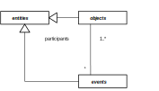
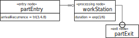
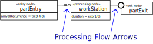
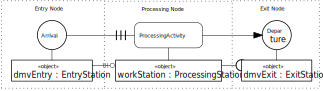

This tutorial is based on the Open Access book Business Process Modeling and Simulation with DPMN, available from https://sim4edu.com/reading/bpms-dpmn/
DPMN = Discrete Event Process Modeling Notation
... is a diagram language for modeling discrete processes, including business processes.
It combines the intuitive flowchart modeling style of BPMN (the Business Process Modeling Notation) with the rigorous semantics provided by
Using a simplistic concept of BPs due to a focus on administrative workflows (as in Banking, Insurance, etc.),
neglecting:
passive resources such as equipment, rooms, vehicles, etc. (as in Health Care, Manufacturing, etc.)
resource cardinality constraints
multitasking constraints
resource modeling concepts such as alternate resource pools, task priorities, activity preemption, etc.
Unnatural semantics of BP models (by translating them to various types of Petri Nets)
Resource Cardinality and Multitasking Constraints 1:1
Resource cardinality constraint: an examination involves exactly one doctor.
Multitasking constraint: a doctor performs at most one examination activity (at the same time).
Resource Cardinality and Multitasking Constraints M:N
Resource cardinality constraint: teaching a course involves at least one and at most two teachers.
Multitasking constraint: a teacher is involved in at most seven course teaching activities (at the same time).
Unnatural Semantics of BP Models
It has been an unfortunate choice in the history of BPM to view business process models as Petri Nets.
Mapping business process models to Petri Nets, instead of Event Graphs, is like mapping
SQL queries to C code instead of predicate logic formulas, for obtaining their semantics.
Issues in BP(MN) Simulation
Using a simplistic concept of BP simulation models:
e.g., modeling decisions in an abstract manner with probabilistic branching,
instead of conditions that are based on attribute values.
Not learning from Discrete Event Simulation (DES), where discrete processes,
including BPs, have been modeled for many years before BPM.
Not Learning from DES
No consideration of: alternate resource pools,task priorities,activity preemption.
As opposed to DES, BPM has a limited concept of "business processes" as isolated "cases".
BPMN
The Business Process Modeling Notation (BPMN) does not support simulation.
However, BPMN models can be turned into limited forms of simulation models by...
adding probability distributions for the rate of incoming "cases" and for activity durations,
assigning probabilities to the outgoing branches of decision nodes,
defining human resources and assigning them to performer pools.
Artificial/ad-hoc "token flow" semantics (instead of Event Graph semantics)
No conditional, but only probabilistic, branching
Only one performer resource per activity (a BPMN swimlane)
No alternate resource pools, no task priorities, no activity preemption
What's Wrong with BPMN?
Overloading/ambiguity of sequence flow arrows
Insufficient integration of the objects that participate in a process
Insufficient resource modeling
No support of processing activities
No convincing formal/operational semantics: according to its (not mandatory) "execution semantics",
an activity is started by incoming "tokens" and available "data InputSets"(!)
What's Good about DPMN?
It has an ontologically well-founded formal semantics based on Event Graphs (Schruben 1983)
It integrates the objects that participate in a process
It allows general forms of declarative resource modeling for resource-constrained activities with
resource roles, pools and constraints
It allows modeling processing activities in Processing Networks
Ontological Considerations
Based on common sense and on the
Unified Foundational Ontology (UFO)
of Guizzardi et al
objects
events
causal regularities
activities
Objects and Events

(1) Objects ("endurants") and events ("perdurants") are the two most fundamental ontological categories.
(2) Objects participate in events.
(3) Events need not be atomic, nor instantaneous. They may be composite and have non-zero duration.
For instance, a soccer match is a composite event that has a duration of 90 minutes.
Causal Regularities
Events, under certain conditions on the state of their participating objects, cause state changes of affected objects and follow-up events.
Activities
... are composite events that are composed of a start event and an end event.
... have a performer, which is an agent.
Resource Constrained Activities
In a BP, a performer is a resource.
Processing Activities
Processing activities are performed at processing stations, such that processing objects
move from one processing station to the next one.
Two Kinds of Business Processes
Activity Networks
with a flow of events
with queues of planned activities (task queues)
⇒ BPMN-style business processes
Processing Networks
with a flow of processing objects and a flow of events
with queues of processing objects, in addition to task queues
generalizing the Queuing Networks of Operations Research
⇒ GPSS/SIMAN/Arena-style business processes
Discrete Dynamic Systems
... are real-world systems consisting of objects, the state of which is changed by a
discrete flow of events;
... can be viewed as state transition systems where events correspond to
transitions that change the state of objects.
An Example of a Discrete Dynamic Systems
We consider a service station as a system characterized by the following narrative:
Customers arrive at a service desk at random times.
If there is no other customer in front of them, and the service desk is available,
they are served immediately, otherwise they have to queue up in a waiting line.
The duration of services varies, depending on the individual case.
When a service is completed, the customer departs and the next customer is served, if there is still any customer in the queue.
Objects: customers, the service desk.
Events: arrivals, service starts, service ends.
Discrete Processes
... are governed by causal regularities, which relate events with (1) state changes of affected objects and (2) follow-up events.
A discrete process consists of a set of events that is partially ordered by their occurrence times.
... have been proposed for event-based simulation modeling by Schruben in 1983.
The integer variable Q denotes the length of the queue. The Boolean variable B denotes the busy/available status of the service station.
The semantics of an Event Graph is obtained by decomposing it into event rules.
Decomposing Event Graphs into Event Rules (1)
Decomposing Event Graphs into Event Rules (2)
Decomposing Event Graphs into Rules (3)
Strengths and Weaknesses of Event Graphs
Strengths:
They provide an intuitive visual modeling language.
They capture the fundamental ES paradigm.
Weaknesses:
They lack a visual notation for (conditional and parallel) branching.
They do not support OO state structure modeling (with objects/classes and attributes).
They do not support activities.
An Example of a Discrete Process
Step
Time
Current Events
System State
Future Events
0
0
Q: 0, B: false
Arrival@1
1
1
Arrival
Q: 1, B: false
ServiceStart@1.01, Arrival@5.4
2
1.01
ServiceStart
Q: 1, B: true
Arrival@5.4, ServiceEnd@8.47
3
5.4
Arrival
Q: 2, B: true
Arrival@6.5, ServiceEnd@8.47
4
6.5
Arrival
Q: 3, B: true
ServiceEnd@8.47
5
8.47
ServiceEnd
Q: 2, B: true
ServiceStart@8.48
6
8.48
ServiceStart
Q: 2, B: true
ServiceEnd@11.95
7
11.95
ServiceEnd
Q: 1, B: true
ServiceStart@11.96
8
11.96
ServiceStart
Q: 1, B: true
ServiceEnd@17.48
9
17.48
ServiceEnd
Q: 0, B: false
Conceptual Models and Design Models
A conceptual information model describes the object/event types of a real world process.
An information design model defines object/event types in the form of object/event classes
that define attributes, associations, operations and constraints.
A conceptual process model describes the causal regularities of a real world process.
A process design model defines event rules that capture causal regularities.
An OE Class Model as Information Design Model
«rv» = random variable
{Tri(3,4,8)} is a constraint requiring the operation to implement (or comply with)
the triangular probability distribution with lower bound 3, mode 4 and upper bound 8.
{Exp(1/6)} is a constraint requiring the operation to implement (or comply with)
the exponential probability distribution with an event rate of 1/6 (that is, on average 1 event every 6 time units).
An Object Event Graph as Process Design Model
The Complete Simulation Design Model
Modeling Activity Networks with DPMN
The Layers of DPMN (1)
Layer
Concepts
Diagrams
Event-Based Simulation
Event Graphs (Schruben 1983)
Events, Event Scheduling Arrows, Assignments
Object Event Simulation
Object Event Graphs (Basic DPMN)
+ Objects w/ State Changes
Activity Networks (DPMN-AN)
Activities
Resource-Dependent Activity Scheduling Arrows
Resource Roles
Resource Multiplicity Constraints
Resource Pools
Introducing Activities as Paired Start/End Events
Resource-Dependent Activity Scheduling Arrows
The Make-and-Deliver-Pizza Model
A pizza service company takes phone orders
for making and delivering pizzas,
with the help of order takers, pizza makers, ovens and a crew of pizza delivery scooter drivers.
OE Class Model
«rv» = random variable
{U(1,4)} is a constraint requiring the operation to implement (or comply with)
the uniform probability distribution with lower bound 1 and upper bound 4.
... have been pioneered by GPSS (1961), SIMAN (1982) and Arena (1992)
... are often characterized by "entities flowing through a system"
More precisely:
A Processing Object enters a Processing Network via an Arrival event at an Entry Station,
is subsequently routed along a chain of Processing Stations where it is subject to Processing Activities,
and finally exits the network via a Departure event at an Exit Station.
The Layers of DPMN (2)
Layer
Concepts
Diagrams
Object Event Simulation
Activity Networks (DPMN-AN)
Activities, RDAS Arrows, ...
Processing Networks (DPMN-AN)
Processing Activities
Entry/Processing/Exit Nodes
Processing Flow Arrows

Example: A Single Workstation System as a Processing Network

A Processing Flow arrow represents a combined object and event flow.
The Real Meaning of Processing Network Nodes

Event/activity flows are complemented by corresponding flows of processing objects.
Processing Networks extend Activity Networks, which extend Object Event Graphs.
Modeling Agents as Interactive Objects
Terminological/Ontological Considerations
The term "agent-based modeling" is an umbrella term that subsumes many different approaches to simulation, typically focused on modeling (collections of) entities/objects/individuals/agents and their interactions with each other and with their environment.
Since the interactions of agents are based on discrete perception and action events, it is natural to define an agent-based modeling and simulation approach as an extension of a DES approach, such that the concept of agents can be used along with the more basic concepts of objects and events.
In academic research, the term "agent-based" M&S is used ambiguously both for individual-based M&S
and cognitive agent M&S.
A Minimal Concept of Agents
... considers agents are objects that interact with their environment (via perceptions
and actions) and with each other (via communication),
based on their information state (beliefs).
The information state of agents contains propositional information about their environment and about themselves
resulting both from perception and from communication.
The Information State of an Agent
A propositional information item of an information state can be expressed in the form of a
triple statement (or, simply, triple), which is an atomic predicate logic sentence that consists of (1) an object name,
(2) a property name, and (3) a property value.
Such an information item can be viewed as a belief of an agent, or as a knowledge item,
where knowledge means correct information or true belief.
Beliefs represent the typically partial and sometimes incorrect subjective information
of agents about their environment and about themselves. They are the most basic component of the cognitive state of an agent.